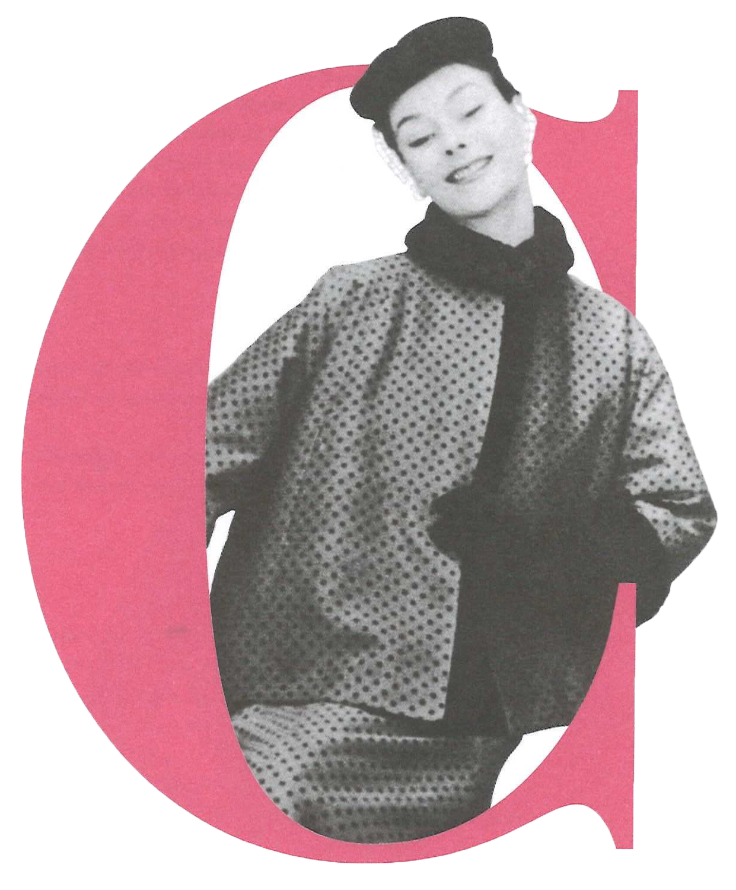

Cocktail hats are the fanciest hats of all. You can have them in any materials; they may be embroidered, covered in flowers, feathers, or ribbons. You can have a big hat or a small one (but choose a small one if you are going to be in a small space!)
You can have any color—you can let your imagination and femininity take over!
... Cocktail hats. Can be large or small, fancy or simple, and any color you like. Black is Dior's choice for this tiny oval bat hat worn well forward.